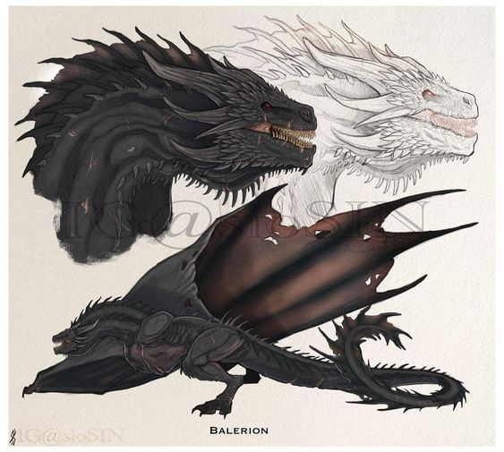
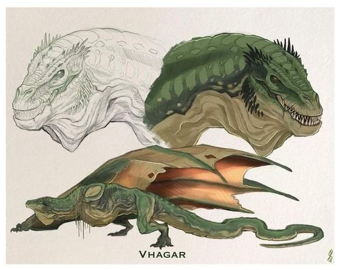
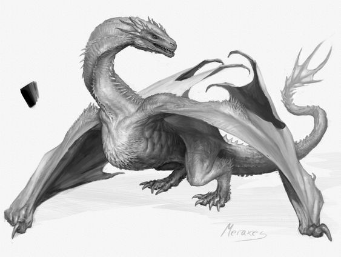

Balerion, apodado el Terror Negro, fue uno de los grandes dragones de la Casa Targaryen durante la Guerra de la Conquista. Fue montado por los reyes Aegon I y Maegor I, la princesa Aerea Targaryen y el entonces príncipe Viserys Targaryen.
Balerion fue el más grande de los tres dragones Targaryen; sus dientes eran del tamaño de espadas y su mandíbula lo suficientemente grande como para tragarse a un mamut entero de un solo bocado.[1] Su fuego era negro, al igual que sus escamas, y su envergadura era tal que pueblos enteros se oscurecían cuando pasaba volando
Vhagar fue uno de los grandes dragones de la Casa Targaryen usados desde la Guerra de la Conquista. Era el dragón ligado a la reina Visenya Targaryen,[1] que posteriormente también fue montado por el príncipe Baelon Targaryen,[2] Lady Laena Velaryon[3] y el príncipe Aemond Targaryen
Se le describe como a un dragón hembra cuya mandíbula era lo suficientemente grande como para que pasara un caballo y su jinete.[5] Su fuego era tan caliente que podía derretir la armadura de un caballero y cocinarlo dentro de ella.[6] Según fuentes semi canónicas, sus escamas eran de color bronce con reflejos azules verdosos y sus ojos de un color verde brillante.[7] En el momento de la Danza de los Dragones, Vhagar había crecido casi tanto como Balerion, y era el mayor de los dragones de Poniente. Su rugido era tan poderoso que podía sacudir los cimientos de Bastión de Tormentas. No había dragón viviente que lo superara en tamaño y ferocidad.
Meraxes fue uno de los grandes dragones de la Casa Targaryen durante la época de la Guerra de la Conquista. Fue montado por la reina Rhaenys Targaryen
Meraxes fue un dragón, en algunos escritos reseñado como hembra, cuyo cráneo era más grande que el de Vhagar, pero más pequeño que Balerion. Sus escamas eran plateadas, pero sus ojos dorados. Se decía que Meraxes podía tragarse caballos enteros
